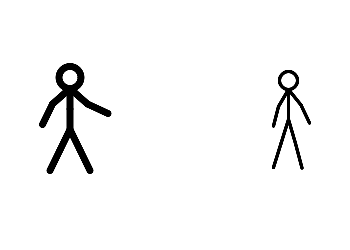
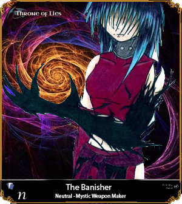
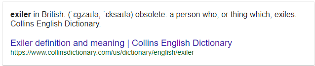

So the name needs some work maybe, lol… But I’ve been working really hard on this… in my head for a while… I’ve been thinking of some sort of Execution Weapon, Amulet… whatever… that banishes the person to a dimension of no return, where they would, of course quickly be devoured by imps. And then their soul (ghost) would be warped to the graveyard…
My first idea was that a shadow portal would be summoned behind the player and a dark-voodoish hand would rip the player into the dimension, through the portal… but then I came up with a simpler idea.
And to show this idea, I’ve done a simple Stick-Figure animation. Of course, it wouldn’t be so bland as this is, this is just to demonstrate what I’m thinking. Anyways here it is, as you can see- the executer leans down, and touches the ground with their… OH YES! Gauntlet… and summons a shadow which creeps its way to the player being executed, they then fall through, and into the Dark-Dimension they go! 

I think it might just be that I think a banishment-execution would be really cool… idek. But yeah…
“Legend has it these gauntlets hold a mystical-power few know exists, inside them lies the lifeforce of Corax themself. Or so that’s what the clerk told me.”
Branch off of https://forum.imperium42.com/t/mod-exclusive-cosmetic-banhammer/2609.
A gauntlet somewhat like this, forged from shadows or something of the sort… Now let’s talk about the Banisher, the crafter (forger?) of the lovely gauntlet.


In this case-scenario, exiler works aswell, let me know what you think about this in the comments section down below.
The Banisher(/Exiler) (Neutral) - End Goal: Live to see all darkness expelled from the Realm. (Survive, but wins with the BD- as long as Cult, and/or Unseen all fall. Is not BD- has own agenda.)
Day Ability 1: Banished Beneath The Floors
2 uses- You stealthily open a small portal beneath the target, trapping them beneath the floorboards, not killing them- just trapping them. They will not be able to preform any actions, or talk for that whole day.
Night Ability 1: Nether-Breach
2 uses- You summon a portal to Hell behind your target, and a shadowy creature pulls your target into the Nether, most likely their dinner. Oops.
Night Ability 2 (Passive): Realming of the Dead
∞ Uses- (Passive) You open a portal to the realm of the Dead, allowing you to spectate their conversations. They can’t see you, but you can see them. Spooky.
Lore:
Not much is known of the Banisher, except they live to see Darkness eliminated, from realm-to-realm they leap…
Comments:
Most likely needs balancing. ^ and ability improvements, this is more of a rough-draft.
Inspired by Blink & Nightcrawler from Marvel, Portal 2, and Minecraft Nether Portals (lol), among many other things. Welp, just think portals and it was inspired by that… and shadows, yes shadows 
A little bit of a backstory behind the Banisher / Lore
(Unofficial Backstory, cuz’ why not) The Banisher has no eyes, but sees perfectly… Strange… Perhaps some-sort of Echolocation? We don’t know, but we do think it’s because of eyes that the Banisher hates the Cult and Unseen on a personal level. Some rumors say it was them that killed the Banisher’s parents, together. For you see, the Banisher was adopted- the child of the Sheriff and Paladin. No one knows whom the Banisher’s birthparents were, perhaps friends of the Sheriff or Paladin? Who’s to tell. Anyways, the Unseen killed the Sheriff, and the Cult killed the Paladin, the death was quite excruciating- for both of them. Both the Unseen, and Cult chose a… peculiar way of killing their target… Let’s just say… they tore out their eyeballs, and fed them to the Banisher- for you see, their family had a Servant, whom put the eyeballs in a cake… the child-Banisher asks “Why does this taste funny Geoffrey?” the servant responds “Well my dear, you’re eating your parents eyes.” he then maniacally laughed. He then had the audacity to ask “Would you like to join us? We have plenty of food, just like this!” letting out a grin. The child-Banisher responded, “NO! You… you monster! You’ll pay for this!!” she then ran to the King to report what had happened. The King responded “And you didn’t accept the invitation? Pity…” he then spooned the Banisher’s eyeballs out with his Royal-Spoon. (And if you haven’t yet caught on, he was an Evil King, the Banisher didn’t know…) ah, but there was a Physician nearby, luckily for the child-banisher, whom patched up the hole, and stopped the bleeding. And so began the Banisher’s life without eyes. about 2 months later she hears yelling from down the hall a voice shouts “stay away from that! AND ME!!”, the now-Teen Banisher walks in and sees a member of the Unseen holding a knife to the old-man in a Robe. “You there! Leave him alone” yelled the Teen-Banisher. “An’ wha’ a lil’ imp’ like ye’ gonna do if I dun’?” said the Unseen member. “I’ll… I’ll throw this at you!!!” said the Teen-Banisher. The Unseen member chuckled and was about to cut the old-man when… “W…wha…?!” breathed the Unseen member in his final breath. The Teen-Banisher smiled. While the Unseen member was being so cocky, the little girl had time to pick up the spear, and when he turned around to the old man, she threw it, with luck, right through the Assassin’s heart. “My goodness child, you’ve saved my life… Amazing aim…!” said the Old man. “I’m the Court Wizard, and I owe you my life little one.”. The girl responded "Oh, no, no! Goodness no! I’m glad to have gotten rid of one more scum on the streets! No thanks needed!  " The Court Wizard insisted “There must be something I can do…” the girl responded “Perhaps, you could maybe… teach me some magic? I want to kill these scum… but I don’t really…” the Court Wizard stopped her “Why yes of course, it’s the least I can do! Meet back here tomorrow, and we’ll begin.” she walked away back to her room and upon the next morning, woke up promptly and to training she went, this continued for 5 years, and after… “Young one… err, Apprentice, I have nothing left to teach you. You know all I know, and it’s up to you what you do with that… Farewell, and may Teemo guide you.” she left without speaking. The Banisher immediately went to work on crafting a weapon of their own, that they can use to rid the world of all Evil (Cult & Unseen). It wasn’t’ easy, but 3 years later, the perfect-weapon was complete, and the Banisher was now in adulthood. What they do with the Gauntlet? Well, that’s for you to decide. As the Banisher is you.
" The Court Wizard insisted “There must be something I can do…” the girl responded “Perhaps, you could maybe… teach me some magic? I want to kill these scum… but I don’t really…” the Court Wizard stopped her “Why yes of course, it’s the least I can do! Meet back here tomorrow, and we’ll begin.” she walked away back to her room and upon the next morning, woke up promptly and to training she went, this continued for 5 years, and after… “Young one… err, Apprentice, I have nothing left to teach you. You know all I know, and it’s up to you what you do with that… Farewell, and may Teemo guide you.” she left without speaking. The Banisher immediately went to work on crafting a weapon of their own, that they can use to rid the world of all Evil (Cult & Unseen). It wasn’t’ easy, but 3 years later, the perfect-weapon was complete, and the Banisher was now in adulthood. What they do with the Gauntlet? Well, that’s for you to decide. As the Banisher is you.